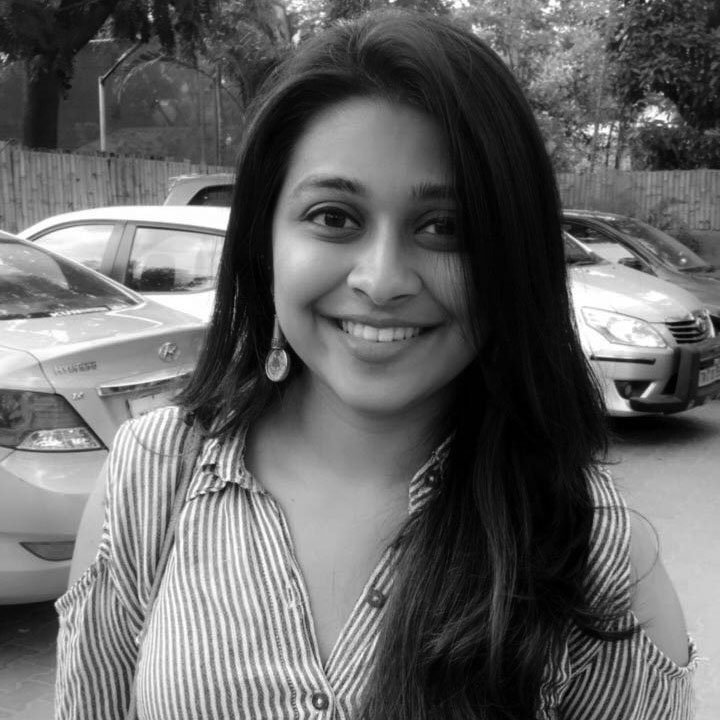

Anannya Parekh Chief Executive Officer

I am 21 years old and currently pursuing my Aerospace Engineering from SRM University. My passions include business management, airplanes, Kathak dancing and public speaking. I love love love indie music and loads of momos! My dream is to spearhead the women leadership movement in the world and maybe, own an aircraft company someday.